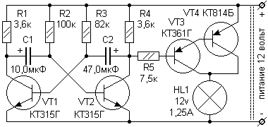

Расчёт транзисторного симметричного мультивибратора
Как и любые транзисторные каскады, расчёт необходимо вести с конца - выхода. А на выходе у нас стоит буферный каскад, потом стоят коллекторные резисторы. Коллекторные резисторы R1 и R4 выполняют функцию нагрузки транзисторов. На частоту генерации коллекторные резисторы никакого влияния не оказывают. Они рассчитываются исходя из параметров выбранных транзисторов. Таким образом, сначала рассчитываем коллекторные резисторы, потом базовые резисторы, потом конденсаторы, а затем и буферный каскад.
Исходные данные:
- Питающее напряжение Uип = 12 В.
- Частота мультивибратора F = 0,2 Гц (Т = 5 секунд), причём длительность импульса равна 1 (одной) секунде.
- Нагрузка - лампочка накаливания на 12 В, 15 Вт.
Будем рассчитывать «мигалку», которая будет мигать один раз за пять секунд, а длительность свечения – 1 секунда.
Выбираем транзисторы для мультивибратора. Например, транзисторы КТ315Г.
Для них: Pmax=150 мВт; Imax=150 мА; h21э>50.
Транзисторы для буферного каскада выбирают исходя из тока нагрузки.
Номиналы элементов указаны на схеме. Их расчёт приводится далее в Решении.

Рис. 1 - Схема мультивибратора
Решение:
1. Рассчитываем рассеиваемую мощность транзисторов
Прежде всего, необходимо понимать, что работа транзистора при больших токах в ключевом режиме наиболее безопасна для самого транзистора, чем работа в усилительном режиме. Поэтому расчёт мощности для переходного состояния в моменты прохождения переменного сигнала, через рабочую точку «В» статического режима транзистора - перехода из открытого состояния в закрытое и обратно проводить нет необходимости. Для импульсных схем, построенных на биполярных транзисторах, обычно рассчитывают мощность для транзисторов, находящихся в открытом состоянии.
Сначала определим максимальную рассеиваемую мощность транзисторов, которая должна составлять значение, на 20 процентов меньше (коэффициент 0,8) максимальной мощности транзистора, указанной в справочнике. Но для чего нам загонять мультивибратор в жёсткие рамки больших токов? Да и от повышенной мощности потребление энергии от источника питания будет большим, а пользы мало. Поэтому определив максимальную мощность рассеивания транзисторов, уменьшим её в 3 раза. Дальнейшее снижение рассеиваемой мощности нежелательно потому, что работа мультивибратора на биполярных транзисторах в режиме слабых токов – явление «не устойчивое». Если источник питания используется не только для мультивибратора, либо он не совсем стабильный, будет «плавать» и частота мультивибратора.
Определяем максимальную рассеиваемую мощность:
Pрас.max = 0,8 · Pmax = 0,8 · 150 = 120 [мВт].
Определяем номинальную рассеиваевую мощность:
Pрас.ном = 120 / 3 = 40 [мВт].
2. Определим ток коллектора в открытом состоянии:
Iк0 = Pрас ном / Uип = 40 / 12 = 3,3 [мА].
Примем его за максимальный ток коллектора.
3. Найдём значение сопротивления и мощности коллекторной нагрузки:
Rк.общ=Uи.п./ Iк0 = 12 / 3,3= 3,6 [кОм].
Выбираем в существующем номинальном ряде резисторы максимально близкие к 3,6 кОм. В номинальном ряде резисторов имеется номинал 3,6 кОм, поэтому предварительно считаем значение коллекторных резисторов R1 и R4 мультивибратора:
Rк = R1 = R4 = 3,6 кОм.
Мощность коллекторных резисторов R1 и R4 равна номинальной рассеиваемой мощности транзисторов Pрас ном = 40 мВт. Используем резисторы мощностью, превышающей указанную Pрас ном - типа МЛТ-0,125.
4. Расчитываем базовые резисторы R2 и R3.
Их номинал находят исходя из коэффициента усиления транзисторов h21э. При этом, для надёжной работы мультивибратора значение сопротивления должно быть в пределах: в 5 раз больше сопротивления коллекторных резисторов, и меньше произведения Rк · h21э.В нашем случае
Rmin = 3,6 · 5 = 18 [кОм],
Rmax = 3,6 · 50 = 180 [кОм]
Таким образом, значения сопротивлений Rб (R2 и R3) могут находиться в пределах 18…180 кОм. Предварительно выбираем среднее значение = 100 кОм. Но оно не окончательно, так как нам необходимо обеспечить требуемую частоту мультивибратора, а частота мультивибратора напрямую зависит от базовых резисторов R2 и R3, а также от ёмкости конденсаторов.
5. Вычислим ёмкости конденсаторов С1 и С2 и при необходимости пересчитаем значения R2 и R3.
Значения ёмкости конденсатора С1 и сопротивления резистора R2 определяют длительность выходного импульса на коллекторе VT2. Именно во время действия этого импульса наша лампочка должна загораться. А в условии было задана длительность импульса 1 секунда.
Преобразовав формулу длительности перезаряда, определим ёмкость конденсатора:
С1 = 1 / 100 = 10 [мкФ]
Конденсатор, ёмкостью 10 мкФ имеется в номинальном ряде, поэтому он нас устраивает.
Значения ёмкости конденсатора С2 и сопротивления резистора R3 определяют длительность выходного импульса на коллекторе VT1. Именно во время действия этого импульса на коллекторе VT2 действует «пауза» и наша лампочка не должна светиться. А в условии был задан полный период 5 секунд с длительностью импульса 1 секунда. Следовательно, длительность паузы равна 5сек – 1сек = 4 секунды.
Преобразовав формулу длительности перезаряда, мы определим ёмкость конденсатора:
С2 = 4 / 100 = 40 [мкФ]
Конденсатор, ёмкостью 40 мкФ отсутствует в номинальном ряде, поэтому он нас не устраивает, и мы возьмём максимально близкий к нему конденсатор ёмкостью 47 мкФ. Но как вы понимаете, изменится и время «паузы». Чтобы этого не произошло, мы пересчитаем сопротивление резистора R3 исходя из длительности паузы и ёмкости конденсатора С2:
R3 = 4 / 47 = 85 [кОм]
По номинальному ряду, ближайшее значение сопротивления резистора равно 82 кОм.
Получили номиналы элементов мультивибратора:
R1 = 3,6 кОм, R2 = 100 кОм, R3 = 82 кОм, R4 = 3,6 кОм, С1 = 10 мкФ, С2 = 47 мкФ.
6. Рассчитаем номинал резистора R5 буферного каскада.
Сопротивление добавочного ограничительного резистора R5 для исключения влияния на мультивибратор выбирается не менее чем в 2 раза больше сопротивления коллекторного резистора R4 (а в некоторых случаях и более). Его сопротивление вместе с сопротивлением эмиттерно-базовых переходов VT3 и VT4 в этом случае не будет влиять на параметры мультивибратора.
R5 = R4 · 2 = 3,6 · 2 = 7,2 [кОм]
По номинальному ряду ближайший резистор равен 7,5 кОм.
При номинале резистора R5 = 7,5 кОм, ток управления буферным каскадом будет равен:
Iупр = (Uи.п – Uбэ) / R5 = (12 – 1,2) / 7,5 = 1,44 [мА ]
Кроме того, как я писал ранее, номинал коллекторной нагрузки транзисторов мультивибратора не влияет на его частоту, поэтому если у вас нет такого резистора, то вы можете его заменить на другой «близкий» номинал (5 … 9 кОм). Лучше, если это будет в сторону уменьшения, чтобы не было падения управляющего тока на буферном каскаде. Но учтите, что добавочный резистор является дополнительной нагрузкой транзистора VT2 мультивибратора, поэтому ток, идущий через этот резистор, складывается с током коллекторного резистора R4 и является нагрузочным для транзистора VT2:
Iобщ = Iк + Iупр = 3,3 + 1,44 = 4,74[мА]
Общая нагрузка на коллектор транзистора VT2 в пределах нормы. В случае её превышения максимального тока коллектора указанного по справочнику и умноженное на коэффициент 0,8 , увеличьте сопротивление R4 до достаточного снижения тока нагрузки, либо используйте более мощный транзистор.
7. Рассчитаем ток на лампочке
Iн = Рн/ Uи.п. = 15 / 12 = 1,25 [А]
Но ток управления буферным каскадом равен 1,44 мА. Ток мультивибратора необходимо увеличить на значение, равное отношению:
Iн/ Iупр = 1,25 / 0,00144 = 870.
Для значительного усиления выходного тока используют транзисторные каскады, построенные по схеме «составного транзистора». Первый транзистор обычно маломощный (мы будем использовать КТ361Г), он имеет наибольший коэфициент усиления, а второй должен обеспечивать достаточный ток нагрузки (возьмём КТ814Б). Тогда их коэффициенты передачи h21э умножаются. У транзистора КТ361Г h21э>50, а у транзистора КТ814Б h21э=40. Общий коэффициент передачи этих транзисторов, включённых по схеме «составного транзистора»:
h21э = 50 · 40 = 2000.
Эта цифра больше, чем 870, поэтому этих транзисторов вполне достаточно для управления лампочкой.
Источники
joyta.ru - Мультивибратор на транзисторах. Описание работы
meanders.ru - Симметричный мультивибратор. Расчёт и схема мультивибратора